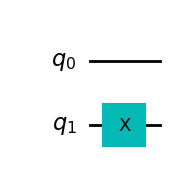

from machinerie import Circuit, draw404
draw404()
from machinerie import Circuit, draw404
draw404()
Étant donné une fonction \(f : \{0, 1\}^n \rightarrow \{0, 1\}\), qui, par tout hasard, renvoie toujours \(0\), sauf pour une entrée, où elle renvoie \(1\).
Si, de nouveau par tout hasard, nous étions dans un CTF, que l’entrée particulière était le drapeau, et que nous avions accès \(f\), comment ferait-on pour le récupérer ? Tester toutes les possibilités est impossible (\(2^n\) possibilités), mais heureusement \(f\) est quantique !
On va donc pouvoir essayer toutes les combinaisons en même temps, et récupérer le drapeau en quelques requêtes seulement !
Pour cela, nous allons utiliser l’algorithme de Grover, que je vous propose de construire pas à pas.
La première étape est de rendre \(f\) quantique. Une manière commune de le faire est de construire sa porte quantique associée, \(U_f\), définie par :
\[ U_{f} |y\rangle |x\rangle = |f(x) \oplus y\rangle |x\rangle \]
Ici, \(|x\rangle\) représente \(n\) qubits, tandis que \(|y\rangle\) récupère le résultat, de dimension \(1\). Le circuit entier sera alors de dimension \(n+1\).
Par exemple, la fonction constante: \[ f_0: x \mapsto 1, \space \text{ou aussi:} \space f_0 = \begin{cases} 0 \rightarrow 1 \\ 1 \rightarrow 1 \end{cases} \] Peut se définir simplement avec:
f0 = Circuit(2)
f0.x(1)
f0.draw_circuit()
Fait-it bien ce qu’on veut? Oui.
Dans tous les cas \(f_0(x)=1\), donc l’opération sur le 2e qubit est \(y \rightarrow 1 \oplus y\). Si \(y=0\), \(1 \oplus 0 = 1\), et si \(y=1\), \(1 \oplus 1 = 0\) (\(a \oplus 1 = -a\)). C’est exactement l’opération \(X\).
On peut vérifier en mesurant :
f0.get_measure(){'10': 1.0}Le seul qubit qui nous intéresse est celui tout à gauche, c’est celui qui correspond à \(y\) (qiskit inverse les notations). Ici on a bien \(\Pr(1) = 1\).
Comme on ne mesure qu’un seul qubit, on peut le faire de manière plus “propre” :
from qiskit import ClassicalRegister
from qiskit.primitives import StatevectorSampler
f0 = Circuit(2)
f0.x(1)
f0.add_register(ClassicalRegister(1)) # on rajoute un bit classique de mesure
f0.barrier() # une barrière pour faire joli
f0.measure(1, 0) # on mesure le dernier qubit sur le 1er bit classique
results = StatevectorSampler().run([f0], shots=1).result()[0].data
for key, value in results.items():
print(key, value.get_counts())c0 {'1': 1}Je vous ai fait un petit utilitaire pour l’occasion :
from machinerie import q
f0 = Circuit(2)
f0.x(1)
results = f0.get_measure(
input_qubit=q("00"), # circuit d'entrée
qbits=[1], # qubit(s) à mesurer
shots=1024, # nombre d'essais
normalise=True, # divise les résultats par le nombre d'essais
plot_full_circuit=True, # plot le circuit en entier pour vérifier
)
print(results){'1': 1.0}À vous de jouer ! Construire le circuit de \(f_1\), avec:
\[ f_1: x \mapsto -x, \space \text{ou aussi:} \space f_1 = \begin{cases} 0 \rightarrow 1 \\ 1 \rightarrow 0 \end{cases} \]
# solution
f1 = Circuit(2)
f1.cx(0, 1)
f1.x(1)
f1.draw_circuit()Construire le circuit de \(f_2\), avec:
\[ f_2: \begin{cases} 0 0 \rightarrow 1 \\ 0 1 \rightarrow 0 \\ 1 0 \rightarrow 1 \\ 1 1 \rightarrow 0 \end{cases} \]
# solution
f2 = Circuit(3)
f2.x(1)
f2.cx(1, 2)
f2.draw_circuit()Un autre moyen d’accéder à \(f\) est de créer la porte \(Z_f\). C’est cette porte qui va nous être utile. Elle est définie par:
\[ Z_{f} |x\rangle = (-1)^{f(x)} |x\rangle \]
Et peut être créée à partir de \(U_f\): \[ U_f |x\rangle |-\rangle = (-1)^{f(x)} |x\rangle |-\rangle = \]
Avec \(|-\rangle = H|1\rangle\).
Construire \(Z_f\) de cette façon implique donc de rajouter un état “temporaire”. Dans notre cas, on peut faire beaucoup mieux, en utilisant une porte \(CZ\).
La porte \(Z\), définie par : \[ Z = \begin{pmatrix} 1 & 0 \\ 0 & -1 \end{pmatrix} \] Effectue un changement de phase sur \(1\) : \(|0\rangle \rightarrow |0\rangle, |1\rangle \rightarrow -|1\rangle\).
Sous sa version controllée, elle effectue un changement de phase si tous les états sont à \(|1\rangle\).
Par exemple, pour \(f_3\) : \[ f_3: \begin{cases} 0 0 \rightarrow 0 \\ 0 1 \rightarrow 0 \\ 1 0 \rightarrow 1 \\ 1 1 \rightarrow 0 \end{cases} \] on peut construire \(Z_{f_3}\) avec le circuit suivant :
f3 = Circuit(2)
f3.x(0) # le bit de droite est à 0 dans l'entrée qui nous intéresse : 10
f3.cz(
0, 1
) # avec la porte précédente, on a maintenant 11, on applique le changement de phase
f3.x(0) # on rétabli l'état initial, pour 00 01 et 11, CZ n'a rien fait, et NOT NOT = I
f3.draw_circuit()On peu donc créer un drapeau très simplement, je vous ai même fait une fonction dédiée :
from machinerie import create_zf
zf = create_zf([0, 1, 1, 0, 1, 0, 0])
zf.draw_circuit()Enfin, il nous faut une dernière porte pour notre algorithme, le \(Z_\text{OR}\) !
$$ Z_ |x:
\begin{cases}
|x \rangle \space \text{si} \space x = 0^n \\
-|x \rangle \space \text{si} \space x \neq 0^n\end{cases} $$
Elle se trouve facilement en ligne, je vous la donne donc, c’est cadeau :
from machinerie import create_zor
zor = create_zor(5)
zor.draw_circuit()Je vous laisse vérifier que ça fait bien ce qu’on veut.
Reprenons notre fonction précédente \(f_3\). On souhaite trouver quelle entrée donne \(1\). Pour cela, on peut commencer par créer tous les états possibles :
\[ |\psi_0\rangle = \frac{1}{2} (|00\rangle + |01\rangle + |10\rangle + |11\rangle) \]
En appliquant \(Z_f\) on obtient : \[ |\psi_1\rangle = Z_f |\psi_0\rangle = \frac{1}{2} (|00\rangle + |01\rangle - |10\rangle + |11\rangle) \]
\(Z_f\) a changé la phase de l’entrée recherchée, que je vais appeler \(|\text{drapeau}\rangle = |10\rangle\). Si l’on voulait mesurer à cette étape, on n’obtiendrait aucun renseignement, tous les états ont la même probabilité d’apparaître : \(\frac{1}{4}\).
Toute la puissance de l’algorithme de Grover se trouve là, en appliquant les portes bien choisies \(H^{\oplus n} Z_\text{OR} H^{\oplus n}\) à \(|\psi_1\rangle\), la probabilité de l’état drapeau va augmenter, tandis que les autres vont diminuer. Appliquer cette procédure plusieurs fois permet de rapprocher la probabilité de sortie de l’état drapeau de \(1\).
\(H^{\oplus n}\) est \(H\) appliqué sur \(n\) qubits :
hn = Circuit(3)
hn.h([0, 1, 2])
hn.draw_circuit()Un tutoriel complet (et bien mieux expliqué qu’ici) est disponible an anglais : https://learning.quantum.ibm.com/course/fundamentals-of-quantum-algorithms/grovers-algorithm
Une implémentation complète du cas général peut être trouvée ici : https://learning.quantum.ibm.com/tutorial/grovers-algorithm
Nous allons dans notre cas rester à \(n = 2\). La deuxième partie de ce challenge est très simple, l’objectif est de vous faire découvrir l’algorithme de manière intuitive, pour préparer le challenge suivant… Grover (2/2). Les idées seront aussi importantes pour un 4e challenge (2e vague).
C’est partit !
Nous avons déjà les deux premières étapes : \[ |\psi_0\rangle = \frac{1}{2} (|00\rangle + |01\rangle + |10\rangle + |11\rangle) \] \[ |\psi_1\rangle = Z_f |\psi_0\rangle = \frac{1}{2} (|00\rangle + |01\rangle - |10\rangle + |11\rangle) \] Pour appliquer \(H^{\oplus 2}\) à tous les éléments de la somme correctement, on peut d’abord regarder l’effet de \(H^{\oplus 2}\) sur la base canonique : \[ H^{\oplus 2}|00\rangle = \frac{1}{2} (|00\rangle + |01\rangle + |10\rangle + |11\rangle) \] \[ H^{\oplus 2}|01\rangle = \frac{1}{2} (|00\rangle - |01\rangle + |10\rangle - |11\rangle) \] \[ H^{\oplus 2}|10\rangle = \frac{1}{2} (|00\rangle + |01\rangle - |10\rangle - |11\rangle) \] \[ H^{\oplus 2}|11\rangle = \frac{1}{2} (|00\rangle - |01\rangle - |10\rangle + |11\rangle) \] Je vous invite à décomposer les état si ce n’est pas clair : \(H^{\oplus 2}|00\rangle = (H|0\rangle) \oplus (H|0\rangle)\).
En effectuant la somme, on trouve : \[ |\psi_2\rangle = H^{\oplus 2}|\psi_1\rangle = \frac{1}{2} (|00\rangle - |01\rangle + |10\rangle + |11\rangle) \]
Ensuite, l’application de \(Z_\text{OR}\) est immédiate : \[ |\psi_3\rangle = Z_\text{OR}|\psi_2\rangle = \frac{1}{2} (|00\rangle + |01\rangle - |10\rangle - |11\rangle) \] Seul l’état \(|00\rangle\) est modifié.
Et c’est finalement à la dernière étape que la magie opère, en appliquant de nouveau \(H^{\oplus 2}\), on obtient… \(|\psi_4\rangle = |10\rangle\) ! Notre drapeau !
L’amplitudes des états \(|\text{non-drapeau}\rangle\), a bien diminuée, elle est même passée à 0. Il suffit donc d’une mesure pour récupérer le drapeau, au lieu de 4 ! wow.
En pratique, pour \(n\) grand, il faut plusieurs mesures, voir même \(\sqrt{n}\) si on a pas d’hypothèse sur le nombre de sequences donnant \(1\).
À vous de jouer !
En utilisant les portes définies précédemment, créez le circuit pour une application du protocole : \(H^{\oplus 2} Z_\text{OR} H^{\oplus 2} Z_{f_3}\).
Vous pouvez utiliser .compose(..., inplace=True) pour composer des circuits.
grover = Circuit(2)
grover.compose(f3, inplace=True)
grover.h([0, 1])
grover.compose(create_zor(2), inplace=True)
grover.h([0, 1])
grover.draw_circuit()full_circuit = Circuit(2)
full_circuit.h([0, 1])
full_circuit.compose(grover, inplace=True)
full_circuit.get_measure(){'10': 1.0}import requests
import json
data = {
"f1": f1.get_flat_unitary(),
"f2": f2.get_flat_unitary(),
"grover": grover.get_flat_unitary(),
}
url = "https://causapscal-des-profondeurs.404ctf.fr/challenges/2"
headers = {"Content-Type": "application/json", "Accept": "application/json"}
response = requests.post(url, json=data, headers=headers)
print(json.loads(response.content)["message"])GG ! Voici le drapeau : 404CTF{z0r_oU_XoR?_j3_N3_m_En_sOr_pLU5}